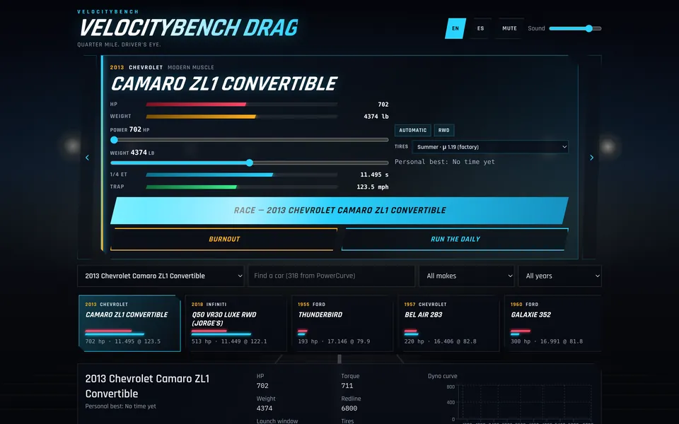
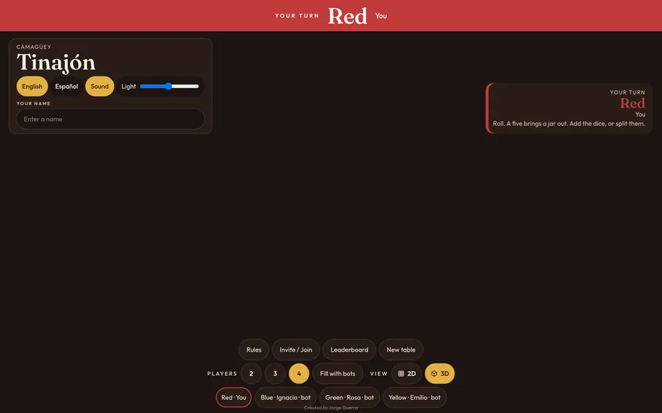
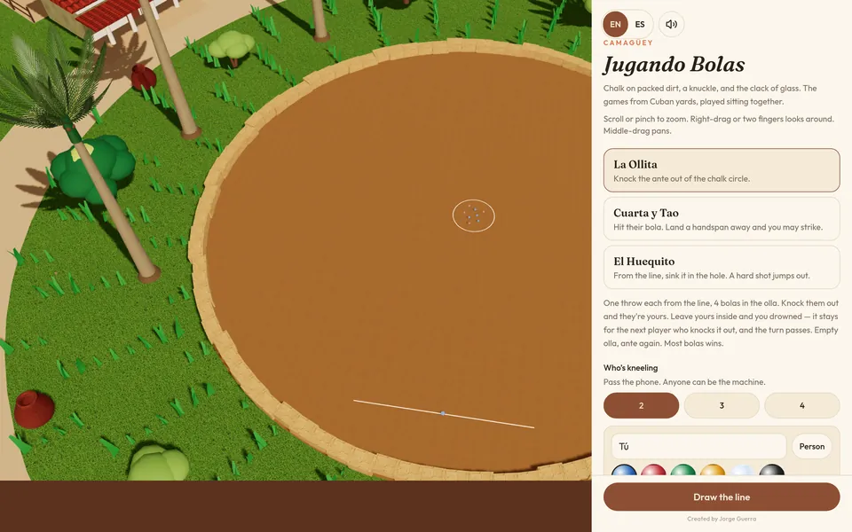
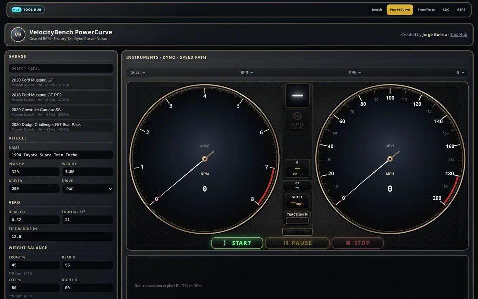
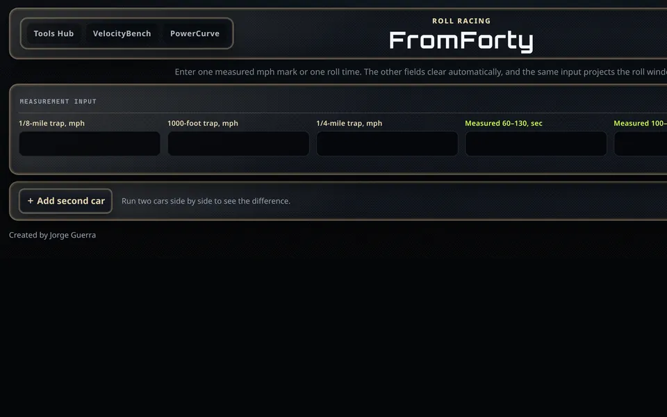
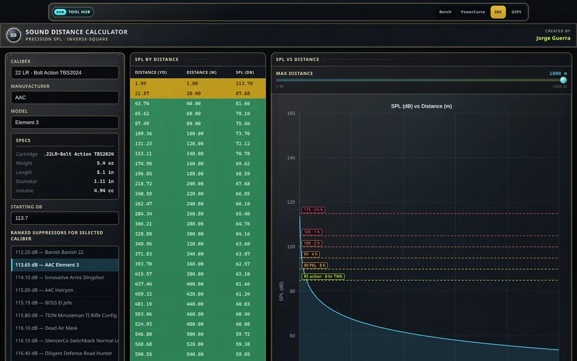
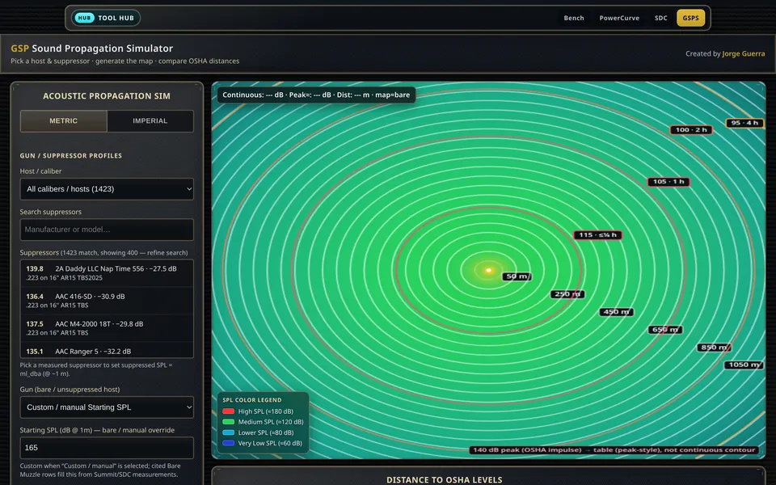
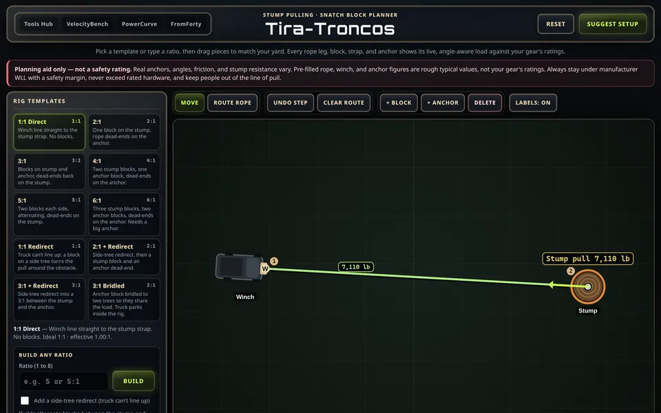
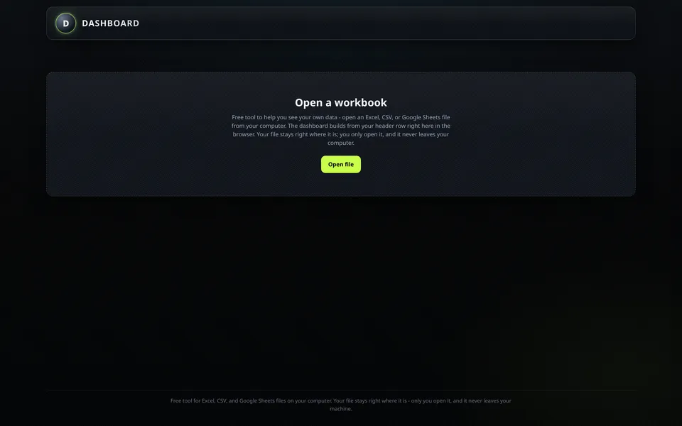

3D drag racing
VelocityBench Drag
Line up a garage car on the strip, stage, launch and shift through the quarter mile with live gauges, tire choice and a time slip.
Game — runs in your browser.
OpenJorge Guerra
Games, car performance tools, and calculators.
Featured game
Line up a garage car on the strip, stage, launch and shift through the quarter mile with live gauges, tire choice and a time slip.

3D drag racing
Line up a garage car on the strip, stage, launch and shift through the quarter mile with live gauges, tire choice and a time slip.
Game — runs in your browser.
Open
Board game · Multiplayer
Cuban Parchís in 3D. Play against bots or invite a friend online with a room code.
Online rooms connect browser-to-browser through public relays; some networks may not connect.
Open
Yard game · Multiplayer
Cuban marble yard games — La Ollita, Cuarta y Tao, El Huequito. Solo or host a table for a friend online.
Online tables connect browser-to-browser through public relays; some networks may not connect.
OpenQuarter-mile calculator
Garage fleet, weather/DA, tires, time slip, and race compare on a gauge-and-chart bench.
Compiled estimates — not track-certified.
Open
Gearing simulator
Geared-RPM simulator with factory TX, dyno curves, FI/EV/Hybrid, quarter-mile markers, and run-to-Vmax.
Compiled estimates — not track-certified.
Open
Roll racing
Roll-racing calculator.
Compiled estimates — not track-certified.
Open
Acoustics
How suppressor muzzle levels fall off with distance — inverse-square SPL curves with OSHA reference lines.
Compiled estimates — not lab-certified.
Open
Firearms · Sound field
Map a shot’s sound field with wind, terrain, and bare vs suppressed profiles — plus OSHA distance tables.
Compiled estimates — not lab-certified.
Open
Rigging planner
Stump-pulling planner: drag snatch blocks and anchors, see live rope, block, and anchor loads against your gear ratings.
Planning aid only — not a safety rating.
Open
Data · Spreadsheet
Any Excel/CSV → local header-driven dashboard; data stays in the browser; optional Fleet layout when columns match.
Data stays in this browser — never uploaded.
OpenNo tools match that search.